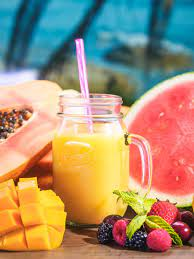

Mango Lemonade Recipe

Description
Simple and delicious recipe for a perfect lemonade drink when it's hot outside!
Ingredients
Simple Sugar
Mango Lemonade
- 2 cups chopped mango
- 1 cup water
- 1 cup lemon juice
- 2 cups ice
Steps
Simple Syrup
- Combine sugar and water in a saucepan over medium-high heat. Bring to a boil and stir until sugar has dissolved. Remove from heat and allow to cool.
Mango Lemonade
- Combine mango and 1 cup water in a food processor until smooth. Pour mango through a strainer into a pitcher. Stir in lemon juice and simple syrup. Mix well
- Add ice to the pitcher and serve.
Homepage